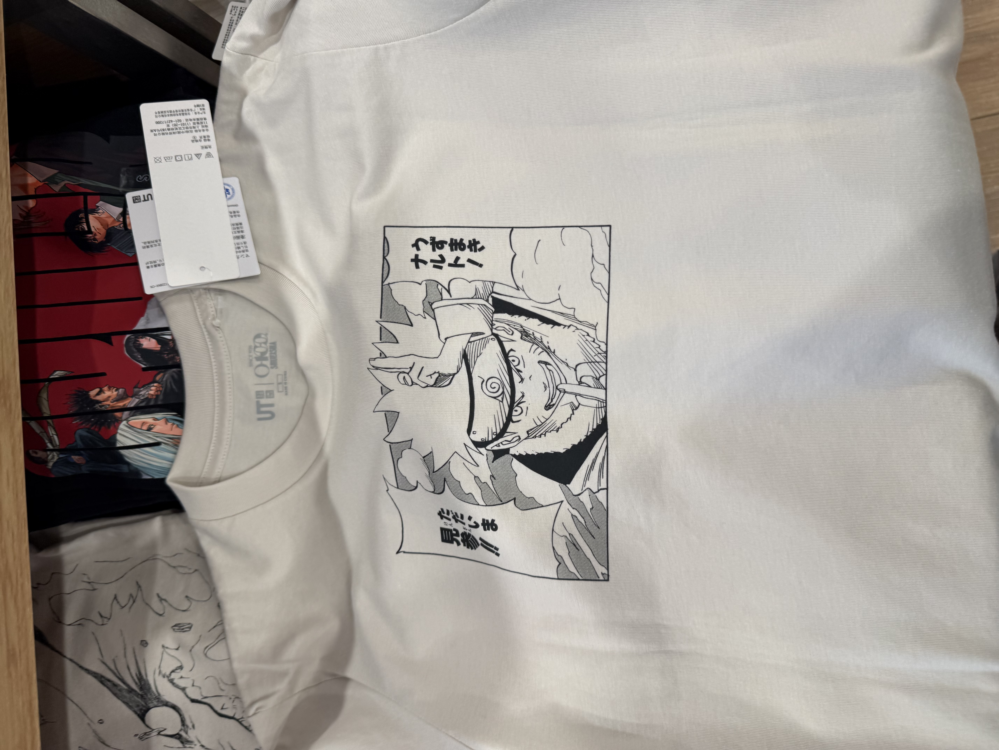
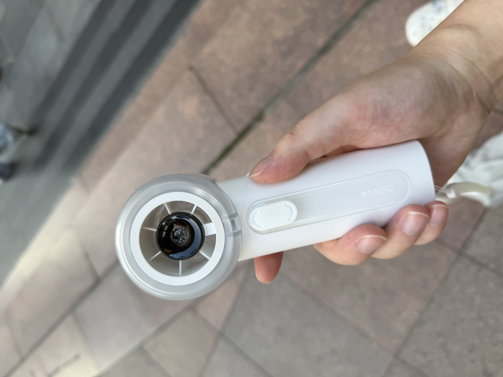
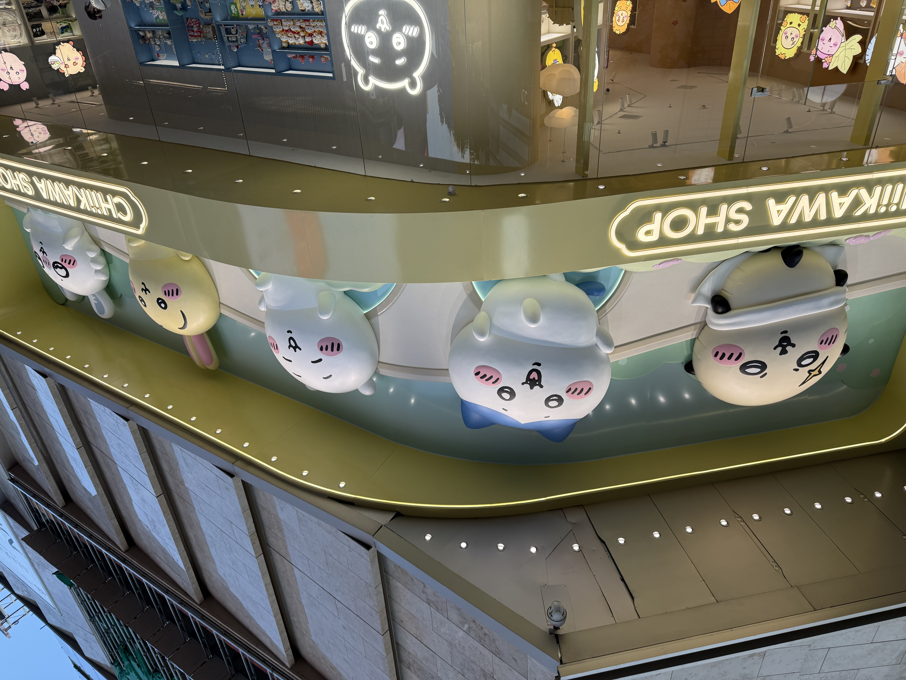
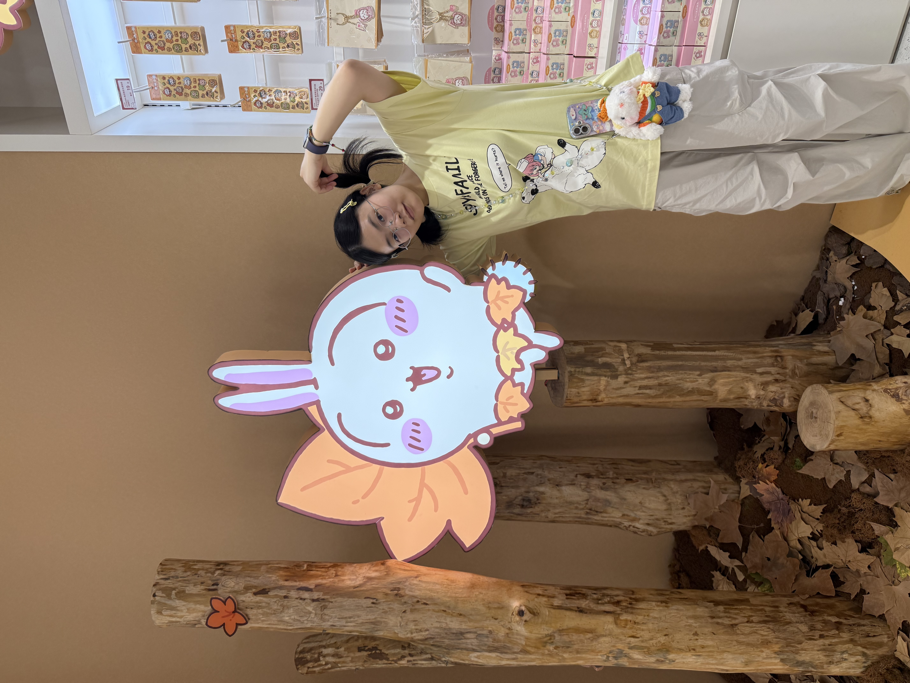
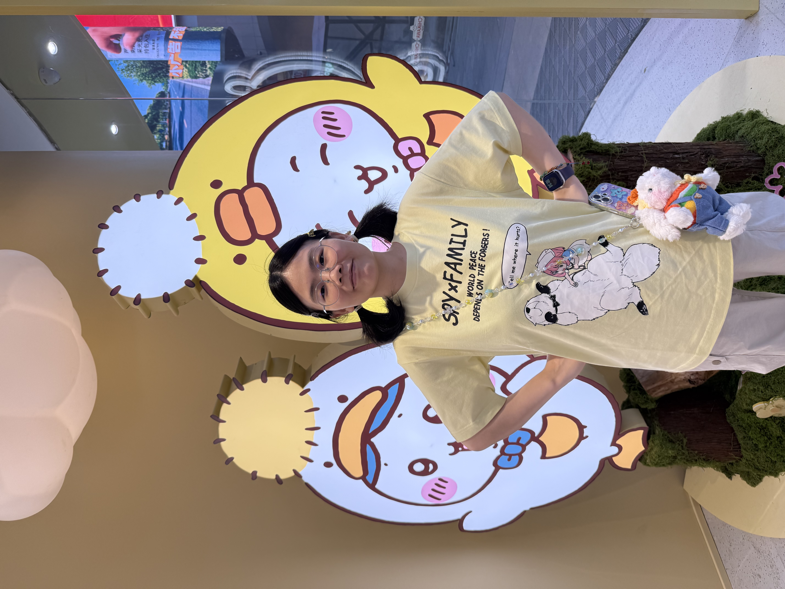
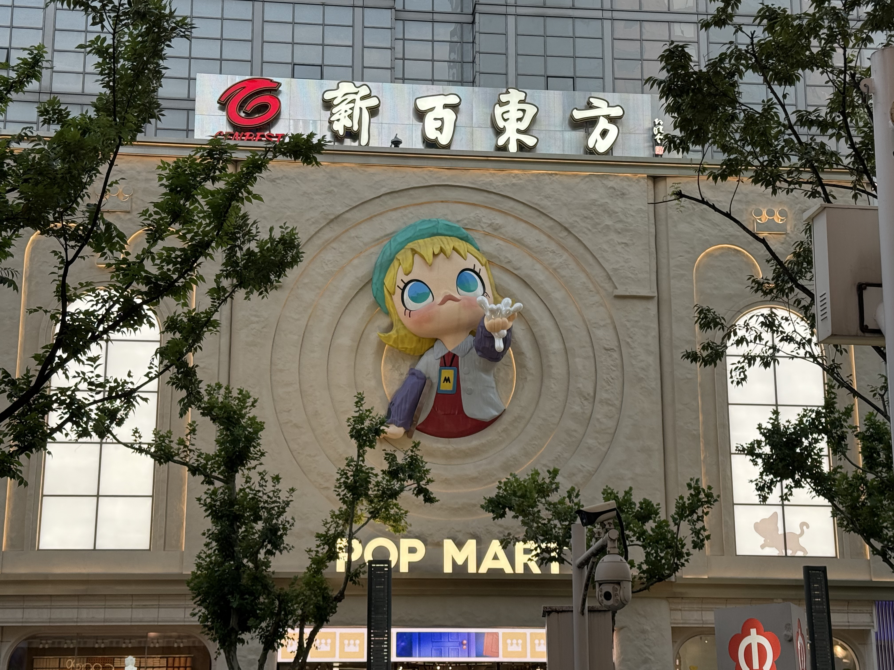
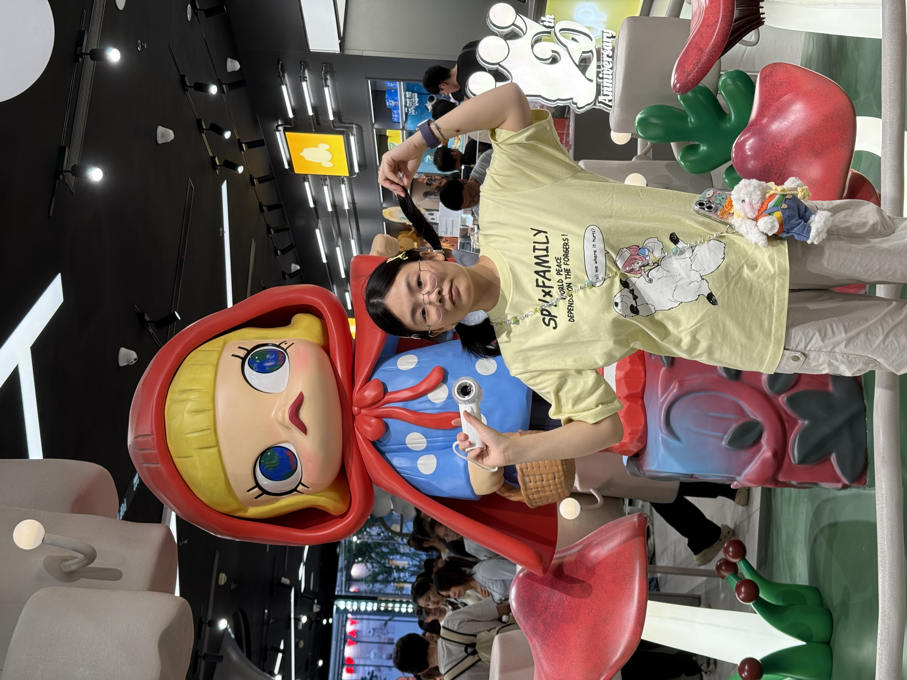
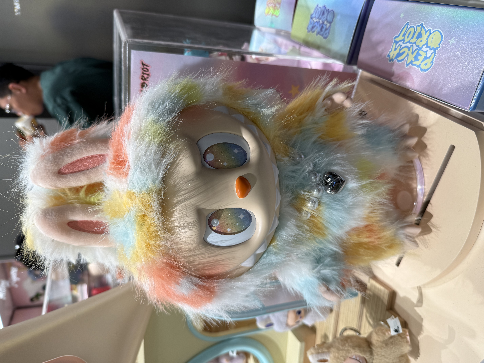
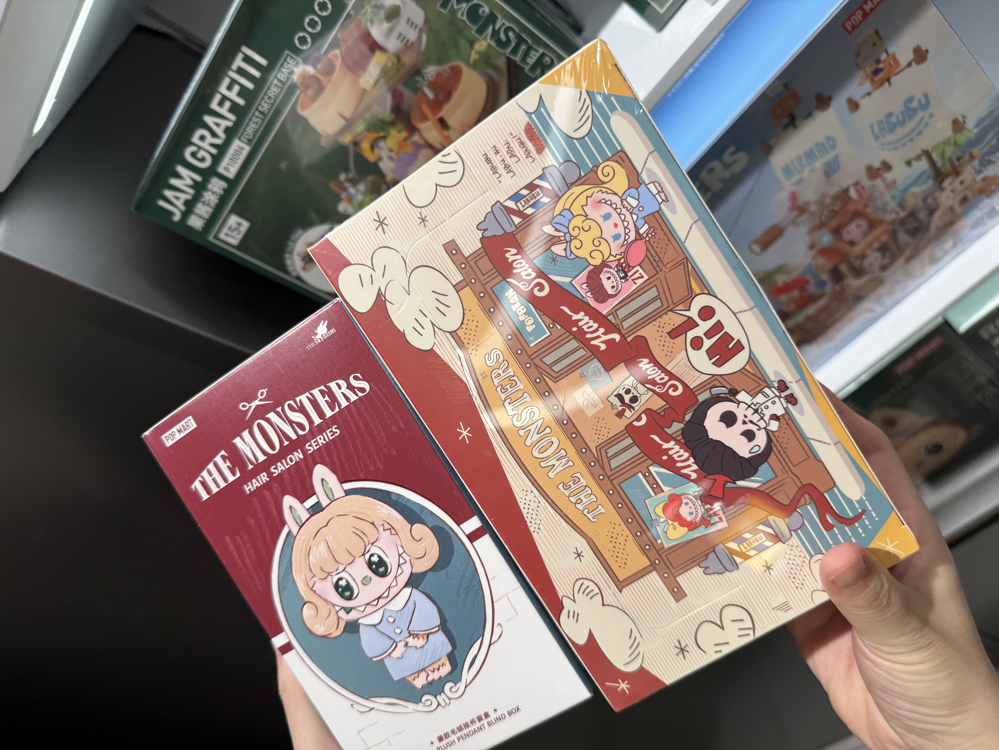
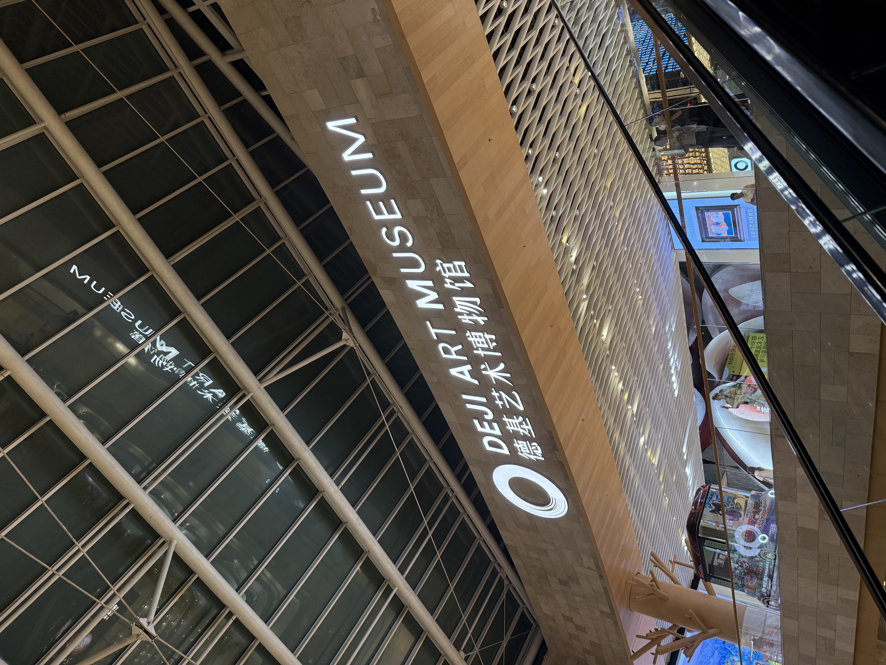

镇江确实离南京不远，这一站来到了南京，中午去tesla中心检查了下车子，没有问题，安心出发。
第一站新街口优衣库，给momo酱买了个间谍过家家的T恤，然后去minisoland买了个强力手持风扇，实在是太热了。


chikawa旗舰店



popmart旗舰店



消费445

德基广场，来都来了，刷一下吧，上了个著名的造价1000w的厕所，逛了下艺术中心，感觉一般。

南京，一般。